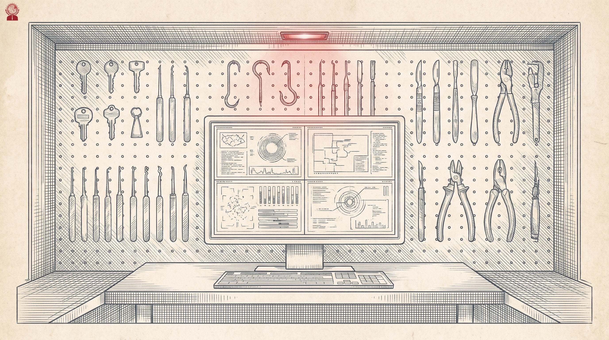
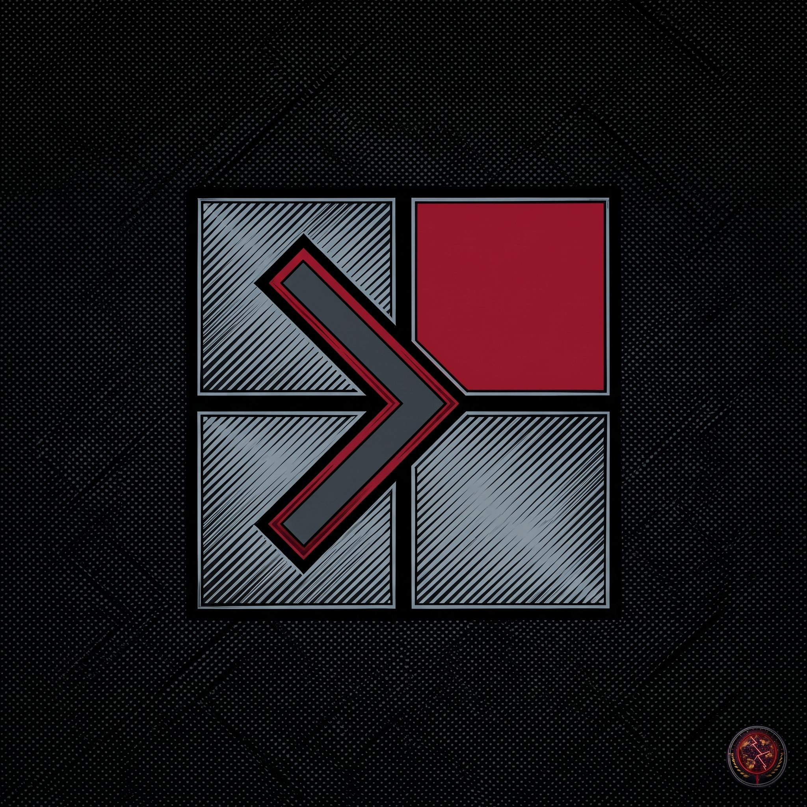
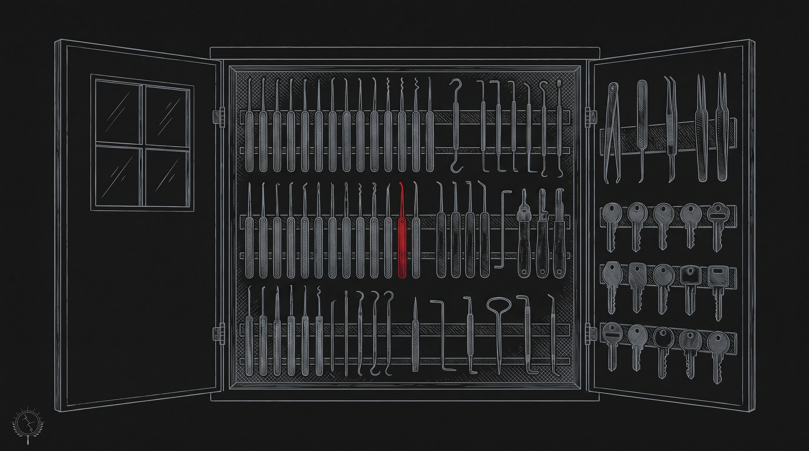

Complete Mandiant Offensive VM, or CommandoVM, is a Windows based security distribution for penetration testing and red teaming. It comes packaged with a variety of offensive tools not included in Kali Linux, which point to the use of Windows itself as an attack platform. I hold this upstream project in the fleet as the Windows counterpart in the set: build the virtual machine, then install the toolset onto it with the script in the repo.
| System | Windows 10 |
| Hard drive | 60 GB |
| RAM | 2 GB |
Insider Preview editions of Windows are not supported.
| System | Windows 10 22H2 |
| Hard drive | 80+ GB |
| RAM | 4+ GB |
| Network | 2 network adapters |
First deploy a Windows virtual machine. Then complete the pre-install work in the repo README: Windows Defender must be disabled for a smooth install, through Group Policy, and on Windows versions 1909 and higher Tamper Protection must be disabled first, otherwise Group Policy settings are ignored. The README walks through each Group Policy change and the reboots between them. Read that section in full before starting.
Set-ExecutionPolicy Unrestricted -force
cd ~/Downloads/commando-vm
Get-ChildItem .\ -Recurse | Unblock-File
.\install.ps1 # GUI install
.\install.ps1 -cli # command line installLegal note from the repo: installation and use of this script is subject to the Apache 2.0 License, and each downloaded or installed package carries its own license terms, which the user must review and accept. See License.txt in the repo.
The repo points contributors to its quick start guide in Docs, and to the separate VM-Packages repository, where all the tool packages live, for package documentation, new package submissions, and package issues. Troubleshooting has its own document in Docs. Credits in the README name the Mandiant Red Team and Mandiant FLARE among the contributors.
